File: 000540.gt.txt (if the image is defective, simply delete all Arabic text and the line will be excluded)
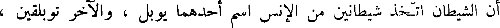
أن الشيطان اتخذ شيطانين من الإنس اسم أحدهما يوبل ، و الآخر توبلقين ،
File: 000541.gt.txt (if the image is defective, simply delete all Arabic text and the line will be excluded)
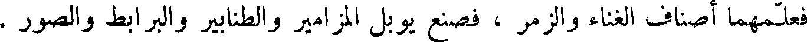
فعلمهما أصناف الغناء والزمر ، فصنع يوبل المزامير و الطنابير والبرابط والصور .
File: 000542.gt.txt (if the image is defective, simply delete all Arabic text and the line will be excluded)
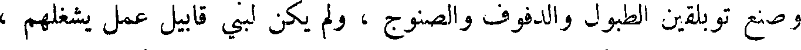
وصنع توبلقين الطبول والدفوف والصنوج ، ولم يكن لبني قابيل عمل يشغلهم ،
File: 000543.gt.txt (if the image is defective, simply delete all Arabic text and the line will be excluded)
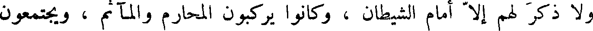
و لا ذكر لهم إلا أمام الشيطان ، وكانوا يركبون المحارم و المآثم ، ويجتمعون
File: 000544.gt.txt (if the image is defective, simply delete all Arabic text and the line will be excluded)
ساروغ بن ارغو
File: 000545.gt.txt (if the image is defective, simply delete all Arabic text and the line will be excluded)
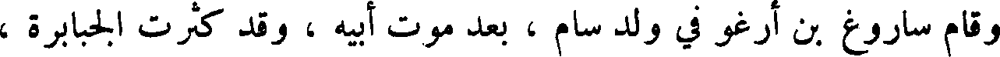
وقام ساروغ بن ارغو في ولد سام ، بعد موت أبيه وقد كثرت الجبابرة ،
File: 000546.gt.txt (if the image is defective, simply delete all Arabic text and the line will be excluded)
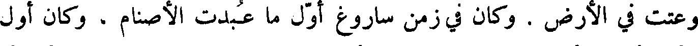
وعتت في الأرض . وكان في زمن ساروغ أول ما عبدت الأصنام ، وكان أول
File: 000547.gt.txt (if the image is defective, simply delete all Arabic text and the line will be excluded)
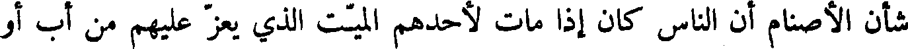
شأن الأصنام أن الناس كان إذا مات لأحدهم الميت الذي يعز عليهم من أب أو
File: 000548.gt.txt (if the image is defective, simply delete all Arabic text and the line will be excluded)
أخ أو ولد صنع صنما على صورته ، وسماه باسمه ، فلما أدرك الخلف الذي
File: 000549.gt.txt (if the image is defective, simply delete all Arabic text and the line will be excluded)
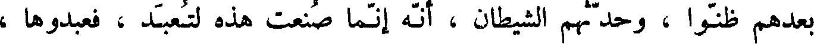
بعدهم ظنوا ، وحدثهم الشيطان ، أنه إنما صنعت هذه لتعبد ، فعبدوها ،
File: 000550.gt.txt (if the image is defective, simply delete all Arabic text and the line will be excluded)
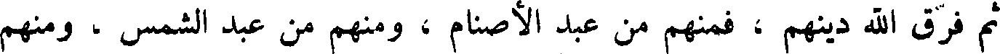
ثم فرق الله دينهم ، فمنهم من عبد الأصنام ، ومنهم من عبد الشمس ، ومنهم
File: 000551.gt.txt (if the image is defective, simply delete all Arabic text and the line will be excluded)
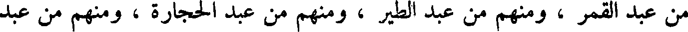
من عبد القمر ، ومنهم من عبد الطير ، ومنهم من عبد الحجارة ، ومنهم من عبد
File: 000552.gt.txt (if the image is defective, simply delete all Arabic text and the line will be excluded)
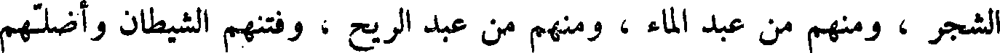
الشجر ، ومنهم من عبد الماء ، ومنهم من عبد الريح ، وفتنهم الشيطان وأضلهم
File: 000553.gt.txt (if the image is defective, simply delete all Arabic text and the line will be excluded)
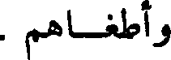
وأطغاهم .
File: 000554.gt.txt (if the image is defective, simply delete all Arabic text and the line will be excluded)
وكان قد ولد له ناحور ، بعد أن أتت عليه مائة وثلاثون سنة . ولما حضرت
File: 000555.gt.txt (if the image is defective, simply delete all Arabic text and the line will be excluded)
ساروغ الوفاة أوصى ابنه ناحور ، وأمره بعبادة الله تعالى ، ومات ساروغ لثلاث
File: 000556.gt.txt (if the image is defective, simply delete all Arabic text and the line will be excluded)
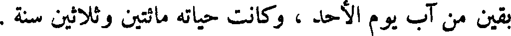
بقين من آب يوم الأحد ، وكانت حياته مائتين وثلاثين سنة .
File: 000557.gt.txt (if the image is defective, simply delete all Arabic text and the line will be excluded)
ناحور بن ساروغ
File: 000558.gt.txt (if the image is defective, simply delete all Arabic text and the line will be excluded)
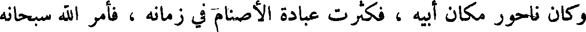
وكان ناحور مكان أبيه ، فكثرت عبادة الأصنام في زمانه ، فأمر الله سبحانه
File: 000559.gt.txt (if the image is defective, simply delete all Arabic text and the line will be excluded)
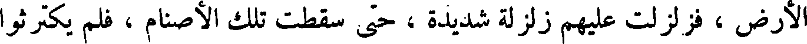
الأرض ، فزلزلت عليهم زلزلة شديدة ، حتى سقطت تلك الأصنام ، فلم يكترثوا
File: 000560.gt.txt (if the image is defective, simply delete all Arabic text and the line will be excluded)
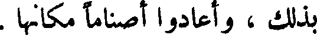
بذلك ، أعادوا أصناما مكانها .
File: 000561.gt.txt (if the image is defective, simply delete all Arabic text and the line will be excluded)
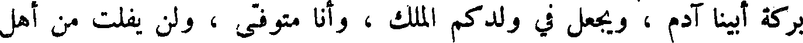
بركة أبينا آدم ، ويجعل في ولدكم الملك ، وأنا متوفى ، ولن يفلت من أهل
File: 000562.gt.txt (if the image is defective, simply delete all Arabic text and the line will be excluded)
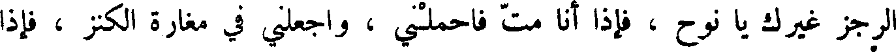
الرجز غيرك يا نوح ، فإذا أنا مت فاحملني ، واجعلني في مغارة الكنز ، فإذا
File: 000563.gt.txt (if the image is defective, simply delete all Arabic text and the line will be excluded)
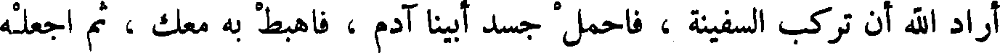
أراد الله أن تركب السفينة ، فاحمل جسد أبينا آدم ، فاهبط به معك ، ثم اجعله
File: 000564.gt.txt (if the image is defective, simply delete all Arabic text and the line will be excluded)
وسط البيت الأعلى من السفينة ، ثم كن أنت وبنوك في طرف السفينة الشرقي ،
File: 000565.gt.txt (if the image is defective, simply delete all Arabic text and the line will be excluded)
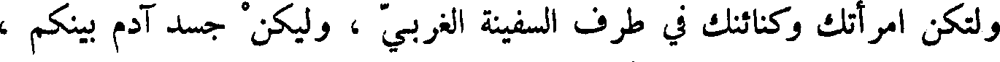
ولتكن امرأتك وكنائنك في طرف السفينة الغربي ، وليكن جسد آدم بينكم ،
File: 000566.gt.txt (if the image is defective, simply delete all Arabic text and the line will be excluded)
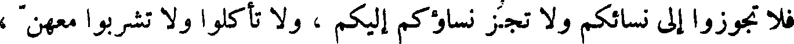
فلا تجوزا إلى نسائكم و لا تجز نساؤكم إليكم ، ولا تأكلوا و لا تشربوا معهن ،
File: 000567.gt.txt (if the image is defective, simply delete all Arabic text and the line will be excluded)
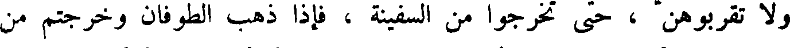
و لا تقربوهن ، حتى تخرجوا من السفينة ، فإذا ذهب الطوفان وخرجتم من
File: 000568.gt.txt (if the image is defective, simply delete all Arabic text and the line will be excluded)
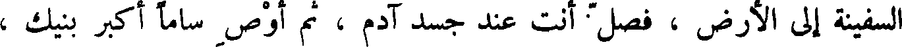
السفينة إلا الأرض ، فصل أنت عند جسد آدم ، ثم أوص ساما أكبر بنيك ،
File: 000569.gt.txt (if the image is defective, simply delete all Arabic text and the line will be excluded)
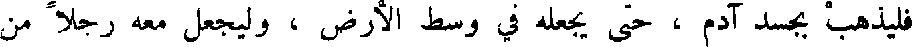
فليذهب بجسد آدم ، حتى يجعله في وسط الأرض ، وليجعل معه رجلا من
To Save: `Ctrl+s`, make sure to choose `Webpage, complete`!